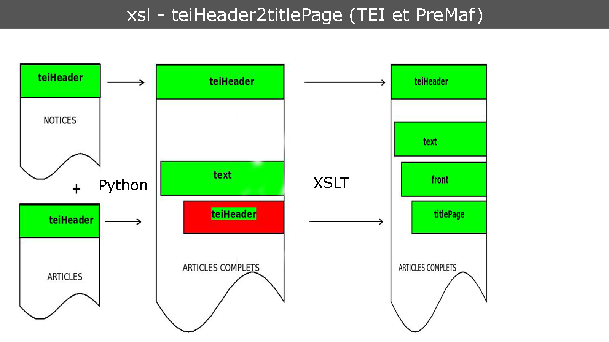

Réalisations:
21 / 22 tâches
45.5 / 46 points
Travaux réalisés
- Phase 3
- Bouton magique
- Bugs / Améliorations
- Nouvelle machine
- Guide
- Feuilles de style XSL
Bouton Magique
- Scan des scores d'autres méthodes
- Si mot(s) identique(s) => repercute score & commentaire
- Affiche le nb de matchs
- Examples : Mots Termith / Mots INIST
Bugs / Améliorations
- Version d'IDEFIX
- Filtre documents
- Recherche étendue
- Timer
- Scroll grand résumé
- Polices/Fonts interface & full-article
Feuilles de style XSL

Résultats attendus pour la TEI brut